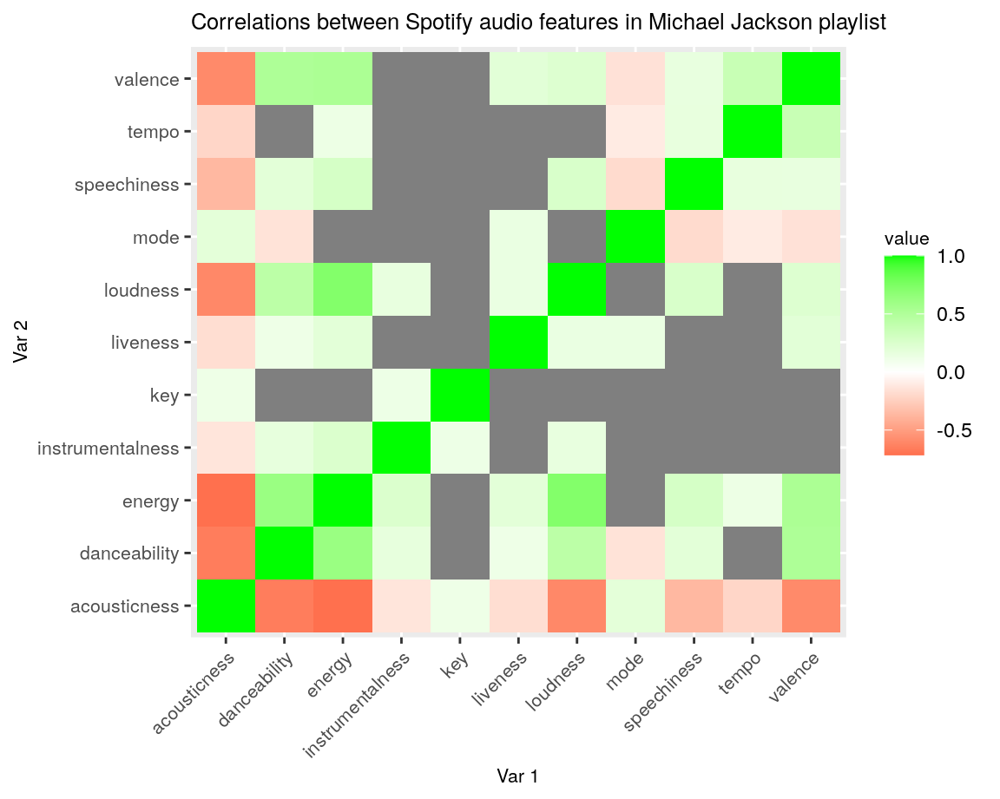
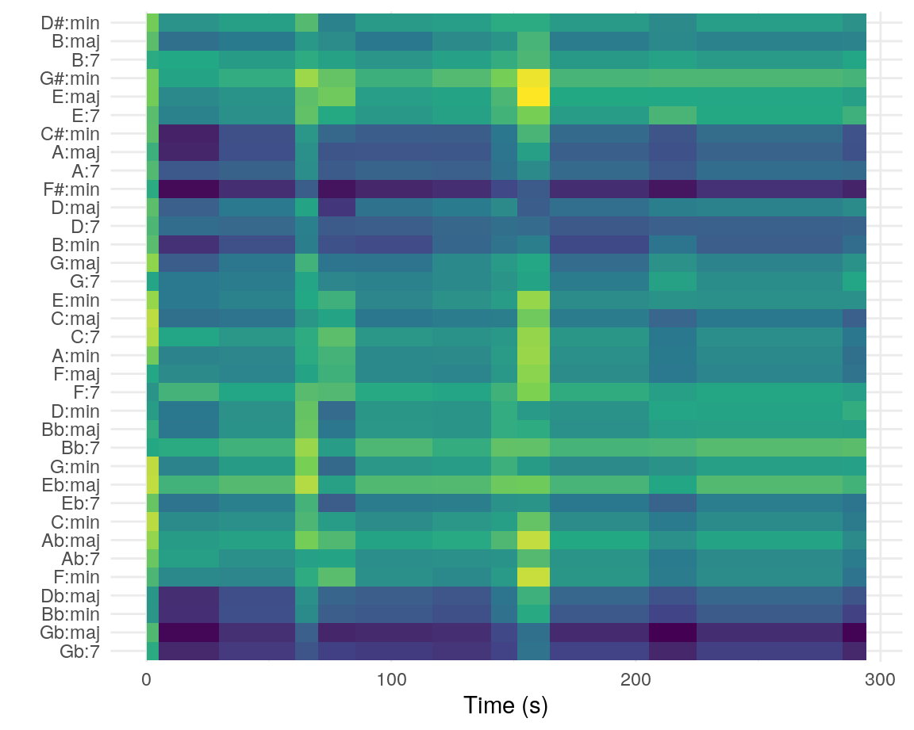
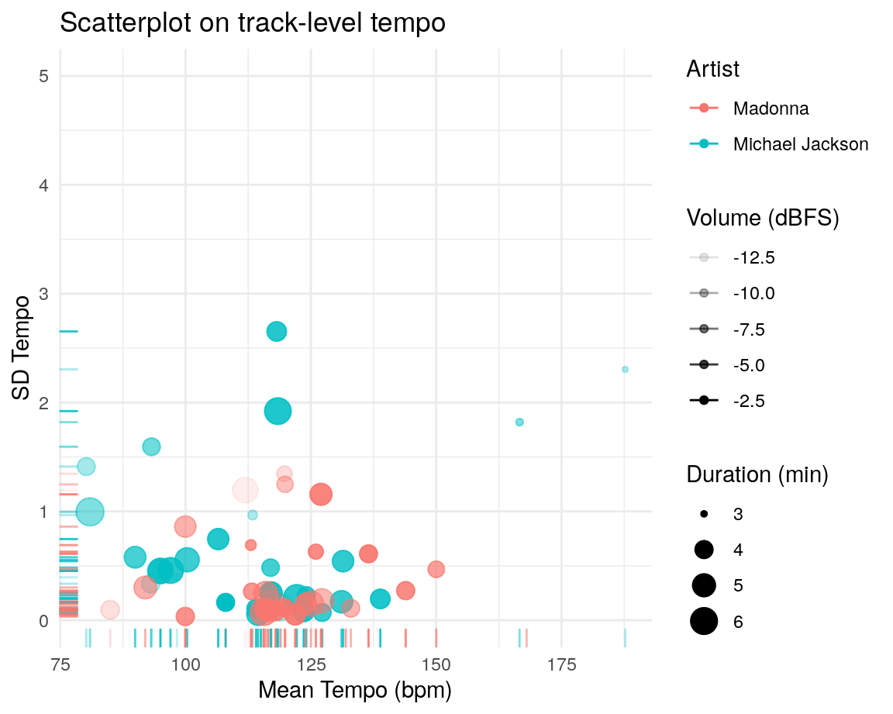
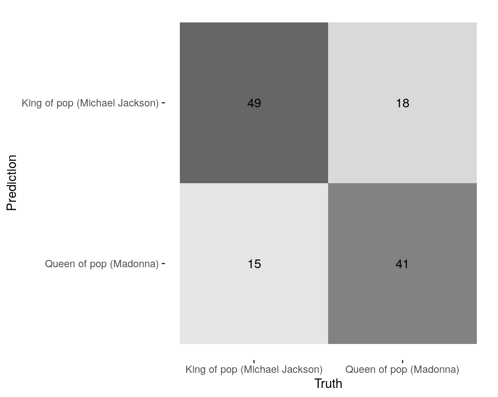
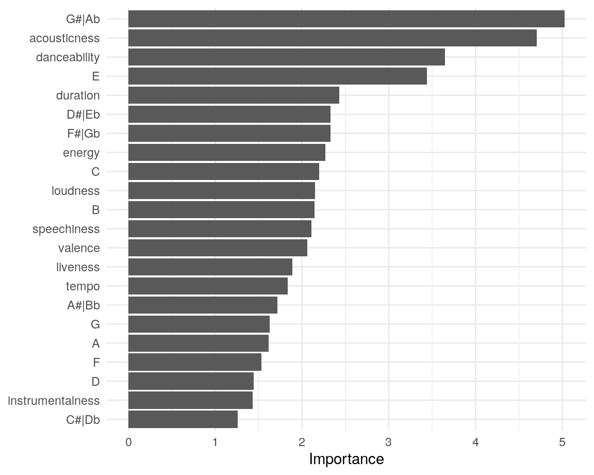

Introduction of corpus
The corpus that will be used in this research consists out of the two Spotify This is: playlists. The first playlist is the This Is Michael Jackson playlist (containing 65 tracks), the second playlist is the This Is Madonna playlist (containing 59 tracks). These playlists are curated by Spotifys Shows & Editorial team. This is a team of music experts and genres specialists from around the world, hired by Spotify to curate and manage Spotifys own playlists.
So, the king and the queen of pop. I choose this corpus because I think both these artists where so good in the music that they made that they became legends, not only in the pop-genre, but for almost every music-lover all over the world. Regardless of the country or age of a person, everybody knows them. The playlist that will be used are on the right side of this page.
The groups that will be compared in this corpus are the artists. What are the features that these two artist have in common? Could this be the features that made them become legends? But also; How do songs of the king and queen of pop defer from each other? In the field of danceability, energy, tempo, instrumentalness, speechiness and more
One of the possible problems may be in the fact that in the This is: Michael jackson playlist there are also songs of the Jackson five. These songs where of course also iconic for Michael Jackson, however, they may be a bit less representative for the overall Michael Jackson playlist. However, there is also a possibility that from these tracks new insights will be derived.
Typical: Michael Jackson: Billie jean, Smooth criminal Madonna: Die another day, Papa dont preach
Atypical: Michael Jackson: shes Out of my life (very slow track) Madonna: Dont cry for me Argentina
This Is Michael Jackson playlist: https://open.spotify.com/playlist/37i9dQZF1DXaTIN6XNquoW
This Is Madonna playlist: https://open.spotify.com/playlist/37i9dQZF1DWTQllLRMgY9S
Data visualization on track-level features
Description scatter plot
The following plot shows the dancebility, energy, valence and mode on track-level for the This is: Michael Jackson playlist and the This is: Madonna playlist next to each other. The x- and y-axis show the energy and dancebility respectively. The size of the dots implicit the valence (musical positiveness) of a track. As you can see are the values clustered around the same place for both artist, however, the tracks of Michael Jackson are more spread for dancebility as well as for energy. Furthermore, the artists have an equally divided ratio of major- and minor mode tracks. What stands out is that both artists have a few outlier tracks, you can view which tracks these are by hovering over them. These outlier tracks will be analysed as well (To Do).
Boxplot comparizon between Queen and King based on the mean of various features

Description boxplot
The previous plot showed the overall distribution on track-level features. In this boxplot the means of various musical features are compared between the King and Queen, from this plot we can make a few observations.
The tracks in the Michael Jackson playlist have a higher overall valence, however, the valence in the Madonna tracks is more spread.
The liveness between both artist is about the same, both have a few outlier tracks here, consisting out of live performances.
The tracks of Michael Jackson have a littel higher overall accousticness.
Both artist have a very low overall speechiness which means that there is a lot of music in these tracks compared to spoken words.
The overall energy is high in both playlists, where both have one distinct outlier represented by the dot on the left.
Dancebility is also high for both artists, the dancebility of the Michael Jackson is a little higher, where the tracks of Madonna are more clustered around the mean.
correlation matrix to show dependencies in both playlists

Description
The two matrices on in this tab show the overall correlation between tracks for the playlist of Madonna and Michael Jackson. By looking at these matrices we can deduce the following:
Valance had got a positive correlation with energy and dancebility, for both artists.
Loudness had got a positive correlation with energy, for both artists.
Accousticness has got a negative correlation with dancebility as well as energy, loudness, speechiness and valence. This is true for both artist, but the effect more extreme in the Michael Jackson playlist.
The Michael Jackson matrix has got more dark-red colors, indicating that there are more strongly negative correlations.
The green diagonal line in the middle indicates the correlations with the category itself, which of course is always 1.
Billie Jean chromagram
Description chromagram
The plot above shows the chromagram for the track Billie Jean by Michael Jackson. This version of Billie Jean is from the Thriller album in 1982. In the next section this version will be compared to the Billie Jean track from the thriller deluxe album in 2008. The euclidean is used to normalize the pitch classes. As you can see, most energy is concentrated in the pitch classes F# and C#.
Dynamic Time Warping of two versions of the Billie Jean track

Description dynamic time warping two version
The plot besides shows dynamic time warping used to compare the two different version of Billie Jean; the Euclidean distance is used as distance metric. There is a clear diagonal line visible in the graph which shows the similarity between the two versions. This diagonal line is not very good vissible in the first 30 seconds which means that the two different version do defer a bit at that place.
Cepstrogram of Billie Jean showing changes in timbre components

The cleptogram on the left shows a number of changes in the timbre components;
- At t=70 there is a shift to c02 (first chorus)
- At t=110 this shifts back to c03 (second verse)
- AT t=150 there is a shift back to c02 (second chorus), where for the rest of the song the biggest magnitude is in c02, except for a little piece around t=220 where it shifts back to c03 (musical solo).
Self-Similarity Matrix of Billie Jean showing transitions in the strack
Description
By looking at the self-similarity matrix while listening to the song the different transitions in the song could be distinguished:
t=0-30 -> musical intro (only instruments).
t=30-70 -> start of singing, first verse.
t=70-110 -> first chorus, where the voice becomes louder.
t=110-150 -> end of first chorus, start of second verse.
t=150-210 -> second chorus, is also very similar to the first chorus in the ssm
t=210-230 -> short musical solo, where there is no singing
t = 230-290 -> chorus again.
Chordogram of Billie Jean.

Description
The chordogram on the left shows the chords that are played throughout the Billie Jean track. The Euclidean is used as method and the chebyshev as normalization, using these two metrics provides a nice visualization on the chords used; this results in a number of observations:
F#:minor and Gb:major are the most used chords, visible by the dark blue line at these chords throughout the entire track.
At t=70 and t=150 a vertical light blue/yellow line is visible throughout the chords,this indicates a change in the chords played at that moment. This is at the moment where the choruses start (at the line: People always told me,Be careful of what you do).
Track-Level Summaries key-chord-corpus

Description
The plot on the left shows the mean tempo (in beats per minute) as well as the variation in tempo throughout the tracks. Furthermore, the length of the tracks is indicated by the size of the dots and the volume of the tracks by the transparency. From this plot we can derive a number of observation which are stated below:
Almost all tracks, for both artists have an high volume (dBFS), this was very common in pop songs; they tried to master the tracks so that the volume is at its loudest so the music stands out. The phenomenon where the volume in tracks is increased can also be referred to as the Loudness war.
Most tracks have a low varieties in tempo throughout the track, there is one outlier here: Smooth criminal by Michael Jackson has got a high variety in the bpm throughout the track. You can check it yourself in the audio player below.
The mean tempo for both artists is clustered around 115 beats per minute which is typical for pop music (100 - 130 bpm on average). Here is also one outlier with a bpm of 188: This is the song ABC by the Jackson Five, this track is actually 94 bpm but it can also be used double-time at 188 BPM, the audio analyser captures the latter. In the following tab the tempogram of this track is show.
The Madonna tracks are a little more clustered around the mean which means Madonnas tracks have less variety in tempo and especially less tempo changes in them.
Histogram of tempo distribution in both playlists
Description
This density graph shows the distribution of tempo in the playlists of King and Queen. Both playlists have a peak around 120 bpm, this is a normal mean for pop. What also stands out is that the Michael Jackson curve is a bit more flattened, indicating that the tempo in this playlist is a bit less clustered around one spot. Furthermore, there is still some density in the graph around 200 bpm for Michael Jackson, this is caused by a mistake in the process of counting the beats per minute. An example of one of these outliers will be show in the next tab.
Novelty functions
bpm
Description
Cyclic tempogram of the track ABC by the Jackson 5 In the previous graph this tracks was labeled as an tempo of 188, however, this tempogram clearly shows that this is not the case. The tempo throughout the track is about 94 BPM which means that the graph in the previous tab indeed showed the double-time beats for this track.
Average timbre coefficients for the Michael Jackson and Madonna playlists

Description
The violin plot on the side shows the different timber coefficients for the first thirty tracks in the Michael Jackson (Blue) and Madonna (Purple) playlist, furthermore, the This is Mozart playlist (Yellow) is used as a third category in order to compare the two to a different musical category. A number of observation can be derived from this plot, however because the Spotify timber coefficients are rather vague no real conclusion can be drawn from this.
The first column (c01) shows the overall loudness of the tracks, this is for Madonna as well as Michael Jackson about the same hight, the loudness in the Mozart playlist is a bit lower.
The biggest difference between Michael Jackson and Madonna is in c04; the Michael jackson tracks have a much bigger spread here.
The Mozart tracks especially defer from the pop tracks in the timber coefficients: c02, c03 and c07.
Clasification and clustering
 
Description
Conclusion & discussion
What stands out in the the analysed Spotify features for both Michael Jackson as well as Madonna is that the tracks of both artists have a high average dancebility and energy. Furthermore, the average tempo for both artists is around 120 beats per minute, this is around the average for pop songs (100-140 bpm). This high energy and dancebility are of course important in the success of both artists, especially in pop genre dancing and energy is very important. However, what I can conclude form this analyses is that the features of the tracks itself where not the most important factor in the success of both artists. It was the the pioneering innovation of subjects and song-texts, because pop more than just music. Its about the image, the publicity, the collaborations, the hit singles, the cultural and sociopolitical messages behind the songs, and the theatrical extravaganzas the artists produce on stage.
For Michael Jackson it was his groundbreaking creativity. For instance, his theatrical extravaganzas with his incredible dance moves and on top of that he brought messages to the world with his songs that no artist has addressed before. He challenged the countrys ideas of how an African-American man should behave and be seen, topics like differences in race, sexuality and racism and where adressed in his songs. This incredible creativity along with the high energy and dancebility in his songs made him not only the perfect pop-star but the pop-legend.
Madonna reinvented the way women were perceived in pop culture, forever pushing the sexual boundaries on stage and on screen. Besides here great music, there was also an message behind most of her songs, for instance; Like a prayer where she kinda offends the christian church by singing a song of a girl in love with god. She provokes people and makes them think, an aspect also very familiar to the Michael Jackson songs. But, besides her music career Madonna also was a artist, dancer, musician, vocalist, director, producer, actress, entrepreneur, philanthropist and childrens book writer. Making her a great exemplary role for women in that time.
Concluding, both artist have very similar means for most Spotify features, where especially energy and dancebility stands out. Michael Jacksons tracks are a bit more varied looking at the spread in the graphs. But, what made both these artist become legends is not only the sounds and features of their music, it was the groundbreaking message in the tracks and their creativity and personality, not only on stage but also behind the scenes. Causing theses names to be remembered for a very long time.